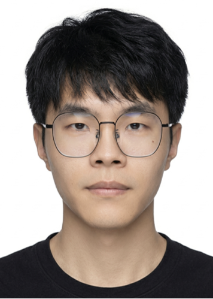

张家豪
浙江大学 · 信息与电子工程学院 · 电子科学与技术
2027届 · 在读直博生
zhangjh914@zju.edu.cn | Google Scholar | GitHub
欢迎来到我的个人主页！我是张家豪，目前在浙江大学信息与电子工程学院攻读电子科学与技术专业的博士学位，师从张鹿教授与余显斌教授。在此之前，我于2022年本科毕业于北京邮电大学，获得电磁场与无线技术专业学士学位。
我的研究兴趣主要涵盖 AI 与光通信（信号处理+信道建模）以及光子AI计算等交叉领域。欢迎各位老师同学与我交流！
教育背景
浙江大学 — 博士研究生
2022.09 – 2027.06
院系背景：信息与电子工程学院 · 电子科学与技术，导师：张鹿、余显斌教授
研究内容：AI + 光通信信号处理，光纤建模，光子AI计算
综合素质：综合素质与学业排名 前7%（14/190），专业课加权 91.7分
科研成果：一作论文顶刊/顶会 7 篇，国际顶会奖项 2 项，专利 3 项，在投论文 2 篇
获奖经历：国际/全国性奖项 12 项，一等奖项/奖学金 7 项
突出荣誉：顶会最佳学生论文+海报奖（2%）、一等奖学金（3%）、五好研究生（7%）等
北京邮电大学 — 本科
2018.09 – 2022.06
院系背景：电子工程学院（原光电信息学院） · 电磁场与无线技术
核心绩效：综合/学业能力均专业第一，GPA：3.81/4.0，入选叶培大班并被评为优秀毕业生。
积极开拓：依托 IPOC 全国重点实验室，在大创竞赛中参与科研项目，评级国家级并结题。
山东省青岛市平度第一中学 — 高中
2015.09 – 2018.06
优势特长
快速学习与深入科研
本科（专业第一）与博士生（前7%）期间学业与综合素质出色。有含一区TOP的科研成果 14 项，获得含国际级的奖项 33 项。对新兴与交叉方向（AI+光通信+光计算），能进行快速学习与深入研究。熟悉其信号处理/建模算法研究及实验验证。
工程能力与解决问题
拥有产学研转化经验。进行过多平台算法研究与软件开发，如 MATLAB（熟练）、Python（熟练）、C++（了解），熟悉系统级仿真平台如 Optisystem，掌握协作与办公软件如 Git 版本控制、MS Office 系列。
前沿视野与工具提效
积极使用 LLM 提升工作效能，将其深度融入代码生成与纠错、文献提炼与润色、科研与项目研讨、讲义与视觉素材生成等工作流。积极学习 LLM 技术的使用技巧与前沿探索，如 Prompt Engineering、AI IDE/Agent、OpenClaw 等。
团队沟通与跨国协作
与海外多个课题组长期交流合作，如 瑞典 KTH、拉脱维亚 RTU、美国 MSU/UVA 等。曾赴欧洲进行课题相关合作实验，通过英语四/六级（601/527）考试，获英语竞赛全国一等奖，团队协作能力良好。
学生与社会工作
任 Q1 期刊审稿人（Comp. Elec. Eng., IF 4.9），参与多个期刊与会议的审稿过程。
参与学术会议进行交流 11 次，做邀请报告/口头报告/海报交流 6 次并多次获奖，如 PGC 最佳学生论文、ACP 最佳海报奖（前1.4%）。
参与多个国内外大型研发项目，如欧盟 FLPP 项目、国内重点研发项目、浙江省领雁计划等。
有奉献精神。累计志愿时长 360 小时，参与 8 个志愿项目，如北京大学国际医院志愿者。
积极响应集体与国家号召。参与国庆70周年群众游行，并获得先进个人奖。
主动负责学校多项事务。担任学院学习委员、412 实验室负责人、寝室长等职务。
补充链接
Google Scholar | GitHub | 光纤建模仿真程序 | 光实验室参数换算器 | 个人提示词合集